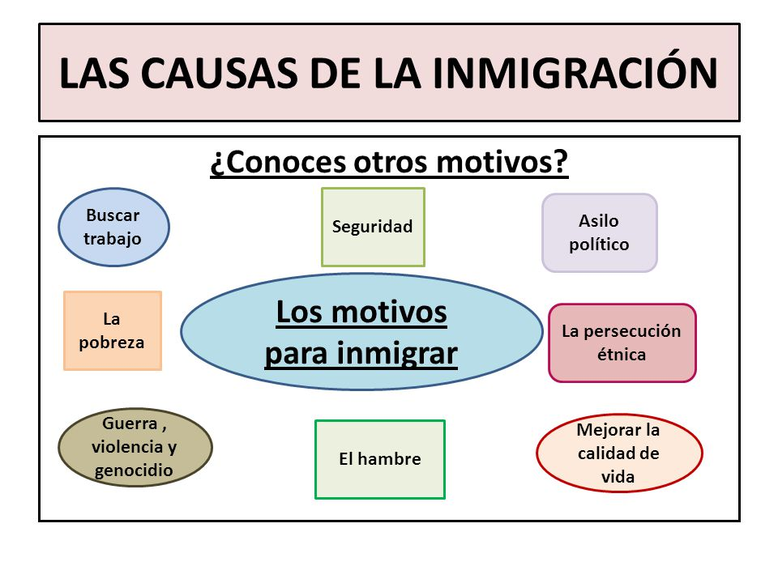
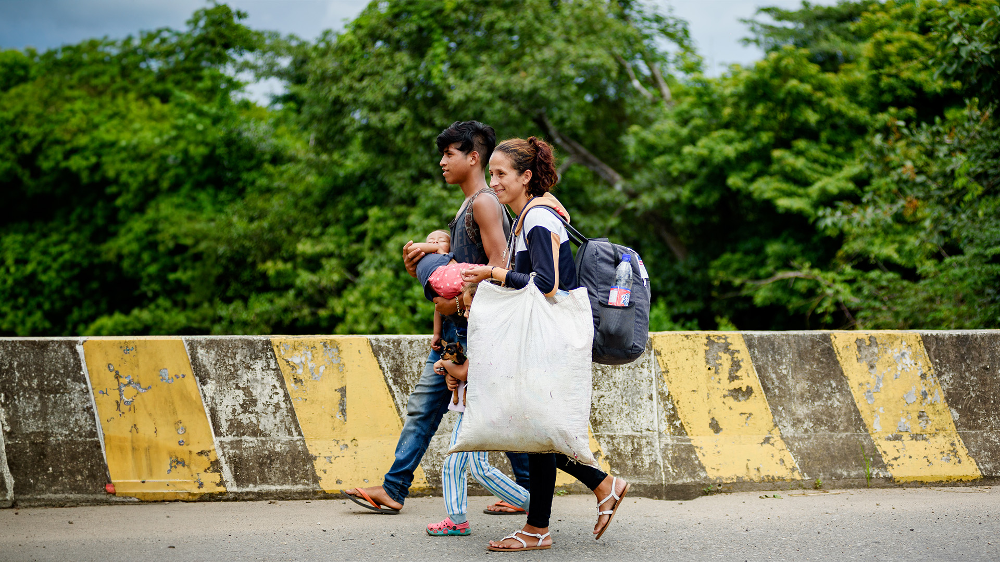

Factores económicos:
Búsqueda de mejores oportunidades laborales:
La falta de empleo, bajos salarios y malas condiciones laborales en el país de origen impulsan a las personas a buscar trabajo en otros países.
Globalización y demanda de mano de obra:
La globalización ha facilitado la movilidad de personas y la demanda de mano de obra en países desarrollados, lo que atrae a inmigrantes.
Crisis económicas:
Las crisis económicas en los países de origen pueden generar un aumento de la emigración.
Factores políticos y sociales:
Conflictos armados y persecución política:
La guerra, la persecución política y la violación de los derechos humanos obligan a las personas a abandonar sus países.
Inseguridad y violencia:
La alta tasa de criminalidad y la inseguridad personal pueden ser factores determinantes para la migración.
Reunificación familiar:
Las personas pueden migrar para reunirse con familiares que ya viven en otro país.
Factores ambientales:
Desastres naturales y cambio climático: Los desastres naturales, como huracanes, terremotos y sequías, así como el cambio climático, pueden obligar a las personas a abandonar sus hogares.
Otros factores:
